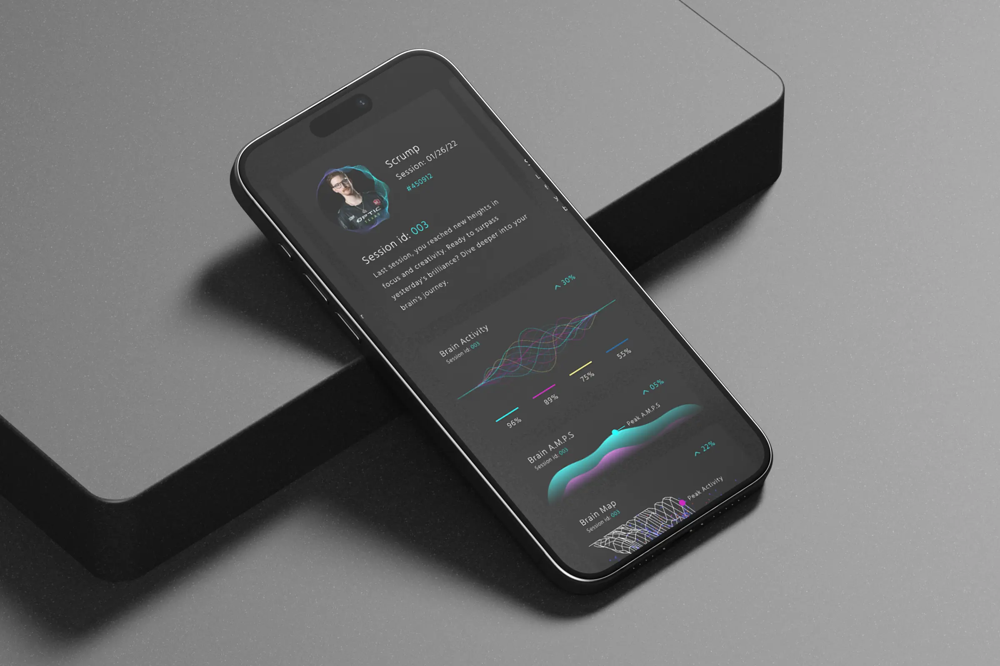

Statespace x Kernel
Revolutionizing gaming and neuroscience
The partnership between Statespace and Kernel was a pioneering effort to bring together gaming and neuroscience, creating a new digital health frontier. My role as the Product Lead was to merge Aim Lab's gaming analytics with Kernel Flow’s neural interface, resulting in a seamless and intuitive user experience that benefited both gamers and researchers. This project represented more than just integration—it marked a leap forward in how we understand the intersection of gaming, health, and the human mind.
Year
2021-2022
Role
Product
Sector
AI / ML / Neurotech
Elevating Statespace & Kernel Through Neural Innovation 🧠🎮
“Harnessing the power of gaming and neuroscience, we're redefining the boundaries of human potential.”
- Statespace x Kernel
The Design Challenge:
The primary challenge was to integrate Kernel's advanced neural interface technology with Aim Lab’s gaming platform in a way that felt natural and beneficial for gamers. We aimed to provide an experience that enhanced gaming sessions while advancing neuroscience research, making the interface accessible to both gaming enthusiasts and scientific communities.
Design Approach:
- 01. User-Centric Design 🎮
We prioritized the user experience to ensure that gamers could easily integrate Kernel Flow into their sessions. The goal was to facilitate adaptation with minimal friction, encouraging engagement while enhancing performance insights without overwhelming the user. - 02. Seamless Integration 🌐
Kernel's neural interfaces had to work smoothly with Aim Lab’s existing platform. Our approach focused on ensuring that the integration did not disrupt gameplay. Instead, it needed to feel like a natural extension of the gaming experience, adding value without complexity. - 03. Data Visualization 📊
Understanding neural data can be challenging. To make the information useful, we developed intuitive dashboards that translated complex neural metrics into understandable insights for both gamers and researchers, bridging the gap between neuroscience and practical gaming enhancement.
Design Solutions:
Adaptive UX 🕹️
- We designed an adaptive user interface that catered to both novice and experienced gamers. The Kernel integration was developed to enrich the gaming experience by providing real-time cognitive feedback, which was seamlessly embedded in a way that complemented existing gameplay dynamics.
Data Interface 📈
- A real-time data interface was created to capture and present neural data effectively. This allowed gamers to see how their brains responded during gameplay, providing insights that could be used to improve cognitive performance, enhance focus, and better understand individual reactions.

Iterative Prototyping 🔄
- We used iterative prototyping, continuously testing and refining the product with real users. By gathering feedback at each stage, we ensured that the final design was both effective and aligned with user expectations, optimizing the interface to meet the needs of our diverse audience.
Design Outcome 🎨
The collaboration between Statespace and Kernel led to an innovative solution that brought gaming and neuroscience together in an unprecedented way. The outcome was a user-friendly platform where complex neural data was made accessible and actionable, allowing gamers to understand their own cognitive processes during gameplay. This design has laid the foundation for future advancements in cognitive gaming and digital health.
Key Results:
- Increased Training Effectiveness:
Players experienced a 30% improvement in their aiming metrics after using Aim Lab's VALORANT-specific training modules. - Wider Community Adoption:
The integration with VALORANT led to increased adoption of Aim Lab as a preferred training tool, with player usage rising significantly following the VCT Challengers NA Combine event. - Setting a New Esports Training Standard:
Our work laid the foundation for future innovations in esports training, combining AI-driven insights with game-specific skill-building techniques.